Working with remotes¶
Concepts¶
A remote repository is a reference to another project which can be hosted in your local machine, some network, or over the internet (Pro Git, 2nd. Ed., Scott Chacon and Ben Straub) where you and your collaborators can push or pull code modifications.
In addition to this, a remote is a way to backup your repository.
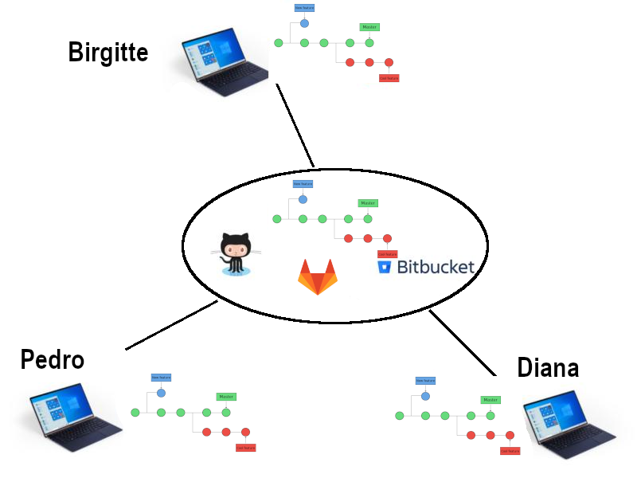
Updated scheme for file stages¶

Concepts cont.¶
The command
$ git remote -v
origin git@bitbucket.org:arm2011/gitcourse.git (fetch)
origin git@bitbucket.org:arm2011/gitcourse.git (push)
displays the remotes that are already set up where you can fetch and pull changes. In this case there is only a single remoted called origin because I cloned the repository from the remote repository arm2011/gitcourse.git. If you created your repository from scratch (git init), you will not see any output from git remote.
In a repository containing an origin remote, one can see the following output with the git graph command (an alias that we created in the Basic Commands session):
$ git graph
* 2e56d0a (HEAD -> main, origin/main, origin/HEAD) text of exercise git diff usage
* 22a7316 Adding yet more lectures
* 0ddb791 Adding some more of the lectures
* 3ff9f8f Adding some of the lectures
Adding remotes¶
A remote repository can be added manually with the command
$ git remote add remote_name location
# Example
mkdyr my-repo && cd my-repo
git init
$ git remote add origin git@github.com:pojeda/my-first-project.git
$ git remote -v
origin git@github.com:pojeda/my-first-project.git (fetch)
origin git@github.com:pojeda/my-first-project.git (push)
where the location of the remote can be an URL or the path if that is in your local machine.
Protocols:
- local -> git clone /opt/git/project.git
- SSH -> git clone ssh://user@server:project.git
- HTTP -> git clone http://example.com/gitproject.git
- Git
Working with remotes¶
One can push or fetch/pull to or from remotes:
$ git push remote_name branch_name
$ git fetch remote_name branch_name
$ git pull remote_name branch_name
In case you obtained the repository by cloning an existing one you will have the origin remote. You can do push/fetch/pull for this remote with
or
because the remote origin and the master branch are configured for pushing and pulling by default upon cloning.
The command:
brings all the changes (branches) that are in the remote and tries to merge them with the current branch of the local repo. The default behavior of git pull (fetch part) is in the $GIT_DIR/config file:In fact, git pull is a combination of two commands:
If you want to fetch all branches and merge the current one:
The command
will send the changes in the current branch to the remote by default.Advanced¶
The default behavior can be seen with:
This can be changed by applying:If you have a brand-new branch called new, you can push it the first time with the command:
which is equivalent to
then, you will be able to push/pull the changes in the branch by simply typing git push/pull
Displaying remote information¶
$ git remote show origin
* remote origin
Fetch URL: git@bitbucket.org:arm2011/gitcourse.git
Push URL: git@bitbucket.org:arm2011/gitcourse.git
HEAD branch: master
Remote branches:
experiment tracked
feature tracked
less-salt tracked
master tracked
nested-feature tracked
Local branches configured for 'git pull':
feature merges with remote feature
master merges with remote master
nested-feature merges with remote nested-feature
Local refs configured for 'git push':
feature pushes to feature (fast-forwardable)
master pushes to master (up to date)
nested-feature pushes to nested-feature (up to date)
Renaming remotes¶
Deleting remotes¶
Bare repositories¶
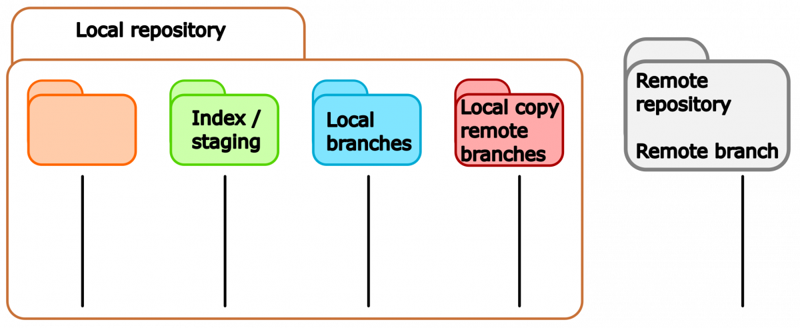
A bare repository is a repository with no working directory.
Creating a bare repository¶
Cloning a bare repository cont.¶
Using GitHub¶
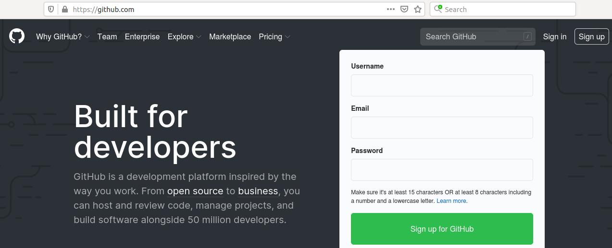
Upon login into your GitHub account you will see the following option to create a new repository
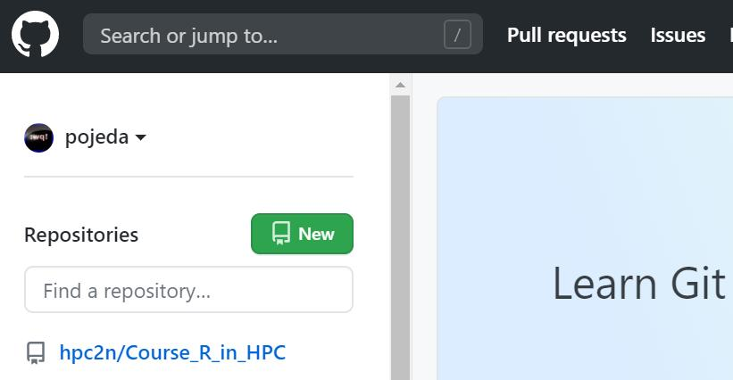
Here, you can choose the type of repository that is appropriate to your needs (public/private), if you want to add README and .gitignore files and also the type of license for your project,
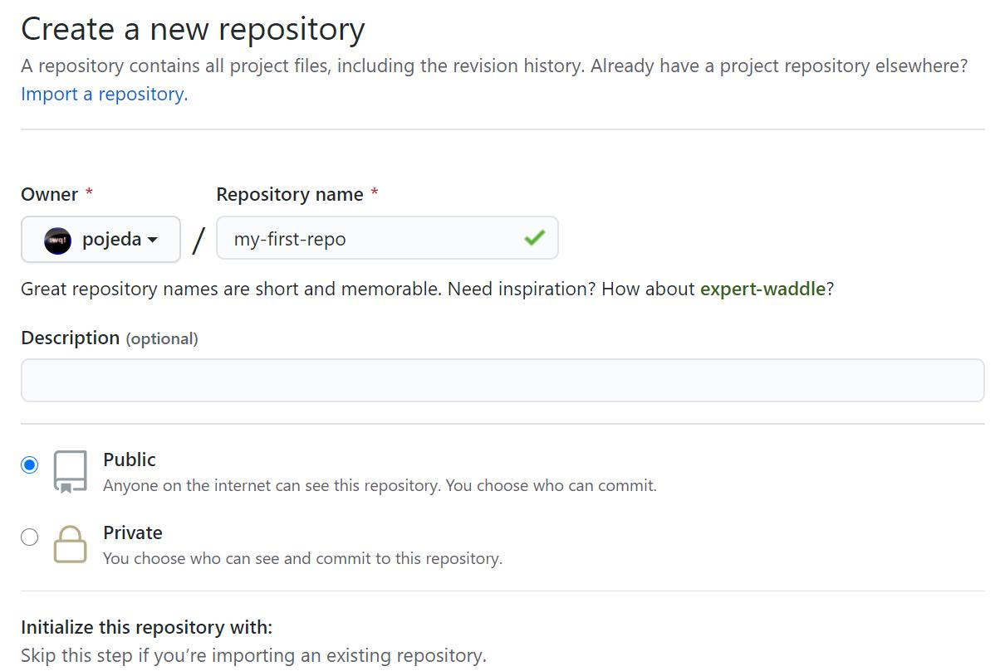
GitHub will suggest some steps that you can take for your brand-new repository:
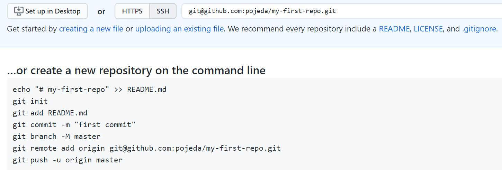

Network visualization¶
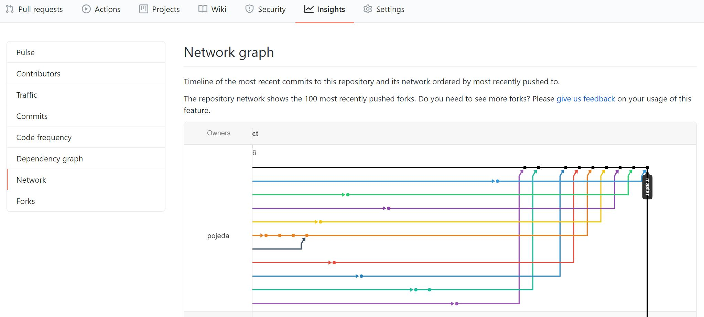
Working with other’s repos¶
In the following scenario, a developer, Bob, has its repo on GitHub. Another developer, Alice, finds it useful. Alice can clone it but she cannot push changes unless Bob allows it:
A better approach is to fork Bob’s repository:
Forking a repository¶
To fork a repository, Alice go to the URL of the target repository and use the option Fork in Bob’s repository:
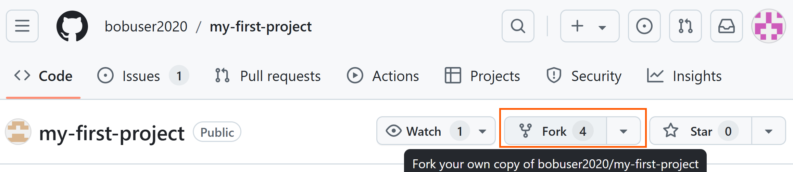
Forking a repository¶
Then, Alice will see the forked repository on her user space:

Alice can then add the forked repository where she can push push changes:
$ git remote add origin git@github.com:aliceuser2020/my-first-project.git
$ git remote -v
origin git@github.com:aliceuser2020/my-first-project.git (fetch)
origin git@github.com:aliceuser2020/my-first-project.git (push)
How does she add the upstream remote?
$ git remote add upstream git@github.com:bobuser2020/my-first-project.git
$ git remote -v
origin git@github.com:aliceuser2020/my-first-project.git (fetch)
origin git@github.com:aliceuser2020/my-first-project.git (push)
upstream git@github.com:bobuser2020/my-first-project.git (fetch)
upstream git@github.com:bobuser2020/my-first-project.git (push)
$ git fetch upstream master
$ git graph
* 2e56d0a (HEAD -> main, upstream/main, origin/main, origin/HEAD) text of exercise git diff usage
* 22a7316 Adding yet more lectures
* 0ddb791 Adding some more of the lectures
* 3ff9f8f Adding some of the lectures
Alice can used the forked repository as the origin where she can put her changes. The upstream remote will help her to be updated with the latest changes from Bob (Github will show messages) but she won’t be able to commit changes to Bob’s repo (without permissions).
Synchronizing remotes¶
After doing some changes, Alice push them to her forked repository but she wants Bob become aware of them (1 commit in this case, click on this commit)
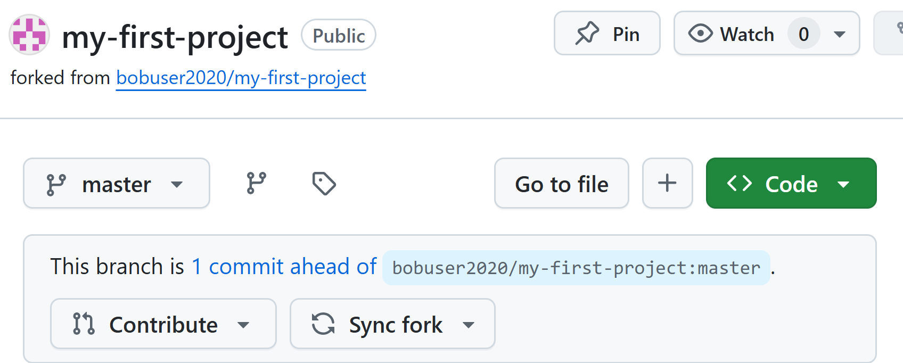
Pull request¶
A pull request will be suggested:
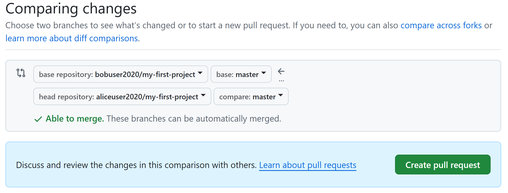
You can then create a the PR:
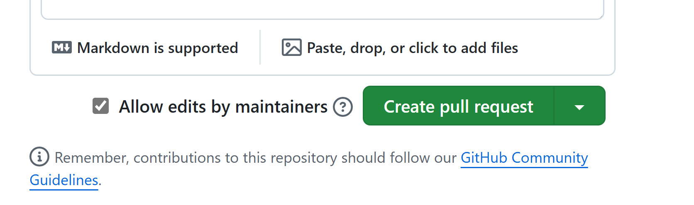
Another way to create PR is with “Pull request” option:
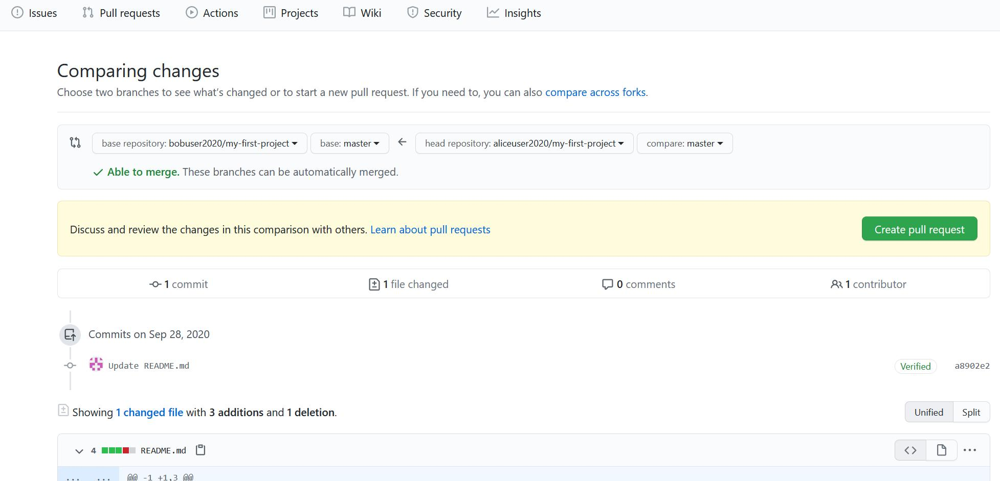
Then, Bob receives an email with the pull request information about Alice modifications. On the GitHub site he sees the request:
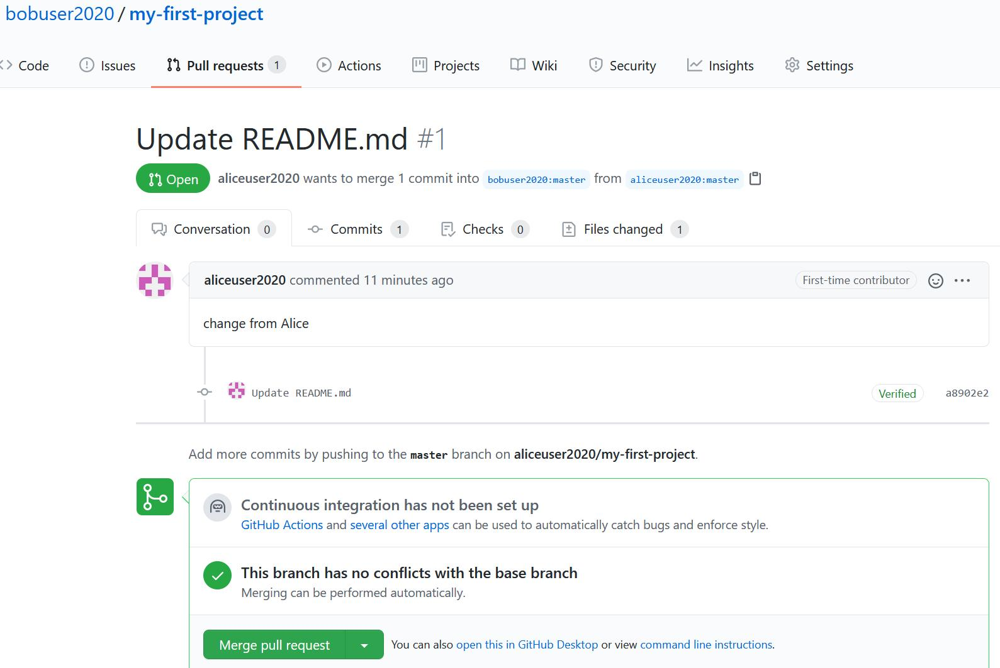
Because Bob find the changes from Alice useful and there are no conflicts he can merge them,
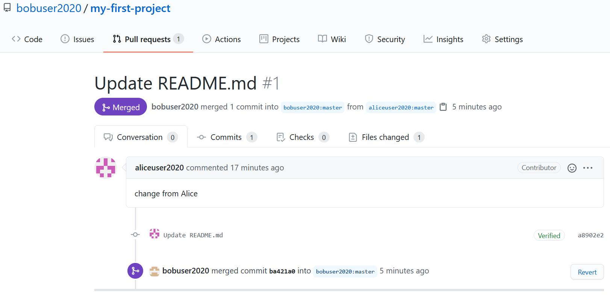
Issues¶
If you find some issues in the files/code you can open an “Issue” on GitHub
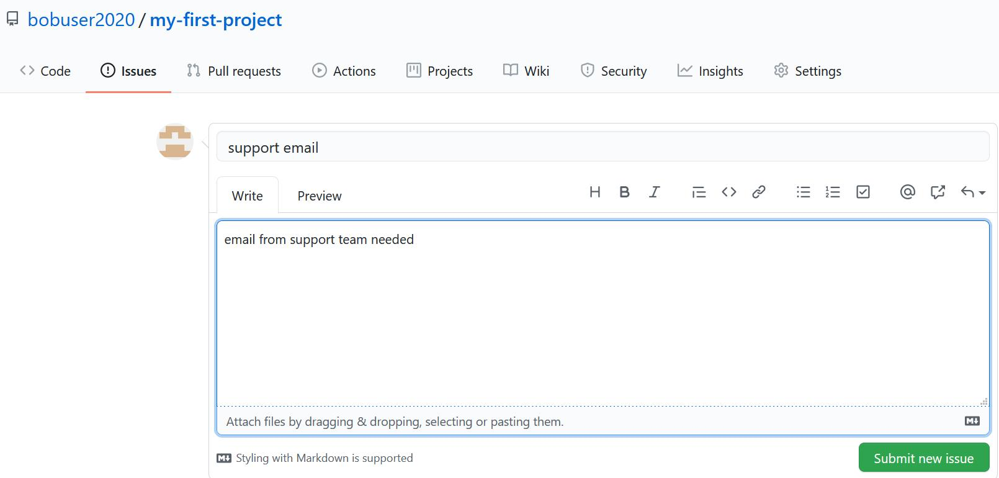
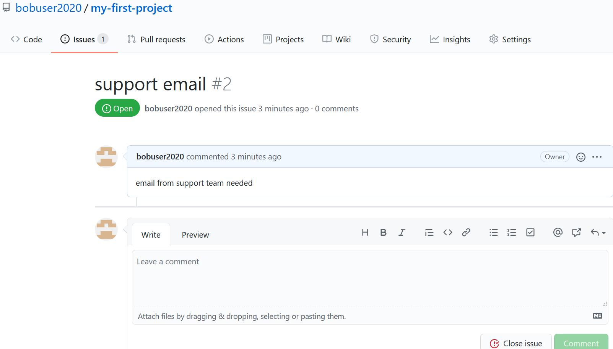
You may also assign people to the issues that are more related to that topic.
In future commits you may refer to this issue by using the issue number, #2 in this case. This will allow you to track the evolution of the issue on GitHub.
Best practices¶
- Communicate with your colleagues.
- Some commands such as git rebase change the history. It wouldn’t be a good idea to use them on public branches.
- Don’t accept pull requests right away.